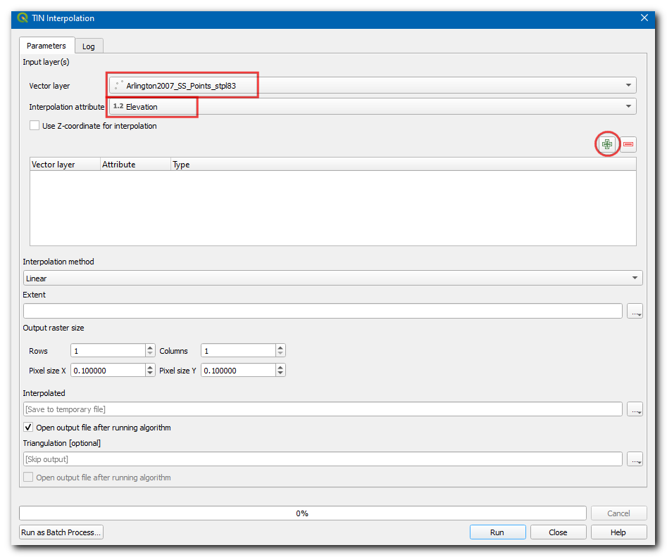

Ujaval Gandhi
Ujaval GandhiInterpolation von Punktdaten (QGIS3)¶
Interpolation ist eine im GIS-Bereich übliche Technik, um eine kontinuierliche Darstellung von Daten zu erreichen, die an diskreten Punkten erhoben wurden. Viele Erscheinungen der Wirklichkeit wie geographische Höhen, Böden, Temperaturen usw. sind kontinuierlich verteilt. Wenn wir flächenhaft verteilte Daten analysieren wollen, müssten wir Messungen an jedem Punkt der Fläche anstellen ‒ was unmöglich ist. Deshalb werden Feldmessungen an verschiedenen Punkten des Untersuchungsgebietes vorgenommen und die Zwischenwerte durch ein ‘Interpolation‘ genanntes Vorgehen daraus abgeleitet. In QGIS wird dies erreicht, indem die eingebauten Interpolationswerkzeuge verwendet werden.
Überblick über die Aufgabe¶
Wir verwenden Tiefenmessungen aus dem Lake Arlington in Texas und erzeugen eine Karte für das Relief des Seebodens und der Tiefenlinien.
Weitere Fähigkeiten, die wir erlernen:¶
Erstellung von Umrissen aus Punktdaten
Maskierung von NULL-Werten in Rasterlayern
Hinzufügen von Beschriftungen zu Verktorlayern
Beschaffung der Daten¶
Das Texas Water Development Board bietet Shapefiles für abgeschlossene Erkundungen in Seen an.
Wir laden die Shapefiles für die Erkundung des Lake Arlington 12/2007 herunter.
Der Einfachheit halber können wir eine Kopie der in diesem Tutorial verwendeten Daten unter folgendem Link herunterladen:
Datenquelle [TWDB]
Arbeitsablauf¶
Open QGIS, in Browser locate and drag the
Arlington2007_SS_points_stpl83the layer to canvas.

A Select Transformation of Arlington2007_SS_points_stpl83 dialog box will appear, leave the select to default and click OK.

Der Layer wird hinzugefügt, sodass wir als weiteren Layer
Boundary2004_550_stpl83.shpin den Arbeitsbereich ziehen können.

The layer will be added to the canvas, now turn off this layer to visualize the
Arlington2007_SS_points_stpl83.

Wir klicken auf die Schaltfläche Hineinzoomen und wählen einen kleinen Bereich des Bildschirms aus. Beim Hineinzoomen werden die Punkte sichtbar. Jeder Punkt stellt eine Echolot-Messung dar, deren Örtlichkeit durch ein Differentielles GPS festgehalten wurde.

Wir wählen das Werkzeug Objekte abfragen und klicken auf einen der Punkte. Das Panel Identifikationsergebnis wird im rechten Teil des QGIS-Fensters mit den Attributwerten des gewählten Punkts angezeigt. Das Attribut
ELEVATIONenthält die Tiefe des Sees an diesem Punkt. Da unsere Aufgabe darin besteht, ein Tiefenprofil und Tiefenlinien zu erstellen, werden wir die Werte an diesen Punkten als Eingabewerte für die Interpolation verwenden.

Im Browser suchen wir den Layer
Islands_2004_550_stpl83.shpund ziehen ihn in den Arbeitsbereich.

Der Layer wird dem Arbeitsbereich hinzugefügt. Er enthält die Information über die Inseln im See, bei welchen eine konstante Höhe angenommen wird (wird nicht interpoliert).

Im Bereich Verarbeitungswerkzeuge suchen wir das Werkzeug und öffnen es durch Doppelklick.
Bemerkung
Interpolationsergebnisse können abhängig von den gewählten Methoden und Parametern deutlich variieren. QGIS unterstützt die Interpolations-Methoden Triangulated Irregular Network (TIN) und Inverse Distance Weighting (IDW). Die TIN-Methode wird normalerweise für Höhendaten verwendet, wogegen die IDW-Methode für die Interpolation anderer Daten wie Stoff-Konzentrationen oder Populationen verwendet wird. Das Modul Spatial Analysis der QGIS-Dokumentation enthält mehr Details dazu.

In the TIN Interpolation dialog box, select
Arlington2007_SS_points_stpl83as the Vector layer,Elevationas the Interpolation attribute. Then click on the Add icon.

Nun wählen wir
Islands_2004_550_stpl83als Vektorlayer,Elevationals Interpolationsattribut und betätigen erneut die Schaltfläche Eingabelayer. Wir ändern den Typ des Layers aufBruchkanten.

Bemerkung
Bruchkanten erlauben es, bei der Modellierung der interpolierten Daten plötzliche Unterbrechungen der Höhenangaben zu berücksichtigen. Indem wir den Layertyp auf Bruchkanten setzen, wird der Algorithmus angewiesen, eine konstante Höhe für die Inseln anstatt der interpolierten Werte zwischen den Messpunkten zu verwenden.
Unter Ausdehnung wählen wir aus der Drop-Down-Liste
Aus Layer berechnenund dortBoundary2004_550_stpl83.

Unter Ausgaberastergröße setzen wir die Pixelbreite und die Pixelhöhe jeweils auf
5. Dann wählen wir die Schaltfläche...neben Interpoliert, um den Ausgabelayer alselevation_tin.tifzu speichern. Wir klicken auf Starte.

Nun wird ein Layer
elevation_tinzum Arbeitsbereich hinzugefügt.

Im Bereich Verarbeitungswerkzeuge suchen wir das Werkzeug und öffnen es durch Doppelklick.

Im Dialogfenster Raster auf Layermaske zuschneiden wählen wir
elevation_tinals Eingabelayer undBoundary2004_550_stpl83als Maskenlayer. Dann klicken wir auf...neben Abgeschnitten (Maske), um den Ausgabelayer alselevation_tin_clipped.tifzu speichern und klicken Starte.

Zum Arbeitsbereich wird ein neuer Layer
elevation_tin_clippedhinzugefügt. Wir betätigen die Schaltfläche Layergestaltungsfenster öffnen.

Die Symbolisierung setzen wir auf
Einkanalpseudofarbe, klicken auf den Pfeil neben Farbverlauf und wählenFarbverlauf invertieren. Unter Beschriftungsgenauigkeit geben wir0ein und betätigen die Schaltfläche Klassifizieren.

Im Bereich Verarbeitungswerkzeuge suchen wir das Werkzeug und öffnen es durch Doppelklick.

Im Dialogfenster Kontur wählen wir
elevation_tin_clippedals Eingabelayer und geben5,000als Intervall zwischen Konturlinien ein. Dann klicken wir auf...neben Konturen, um den Ausgabelayer alscontour.gpkgzu speichern. Anschließend betätigen wir die Schaltfläche Starte.

Bemerkung
Das Intervali wird in den Einheiten des Layer-KBS gebildet. Unsere Quelldaten sind im KBS EPSG:2276 NAD83 / Texas North Central (ftUS) definiert, sodass das Intervall für die Konturen als 5 Fuß interpretiert wird.
Zum Arbeitsbereich wird ein neuer Layer
contourhinzugefügt. Wir betätigen die Schaltfläche Layergestaltungsfenster öffnen und wechseln zum Bereich Beschriftungen.

Wir wählen
Einzelne Beschriftungenund geben als WertELEVan.

Im Tab Platzierung ändern wir den Modus auf
Gebogen.

If you want to give feedback or share your experience with this tutorial, please comment below. (requires GitHub account)